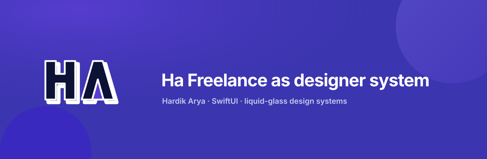

Design systems
Tokens, type scales and components that stay consistent from prototype to production.
Freelance design system
I'm Hardik Arya. I design and build interfaces — liquid-glass dashboards, SwiftUI screens and web experiences — as one reusable system instead of one-off screens.
The image used on every profile and sign-in screen

Three services, one system
Tokens, type scales and components that stay consistent from prototype to production.
Liquid-glass cards, motion and 3D depth built the way iOS expects them.
Copilot prompts, generators and reviews wired into the day-to-day loop.
Designing my own Instagram with an app called freemilk.ai.
My own design of the Facebook UI in Swift.
Designing the Instagram UI.
Designing the X app UI.
Web version of the Facebook interface.
Design from Replit.
Same tokens as the dashboard
Design and code, in one loop. The dashboard already has your repositories, Copilot and issues wired in.